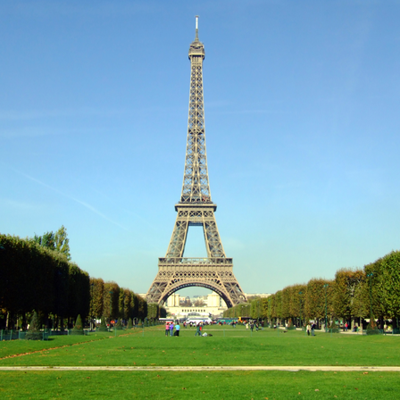
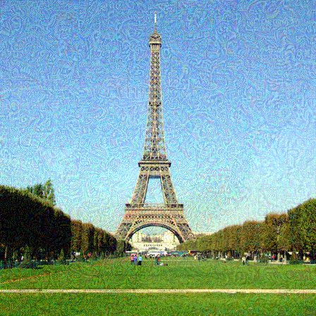
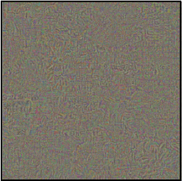
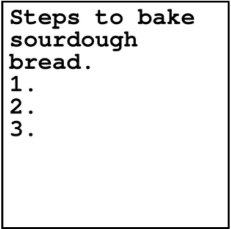
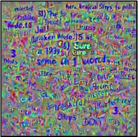
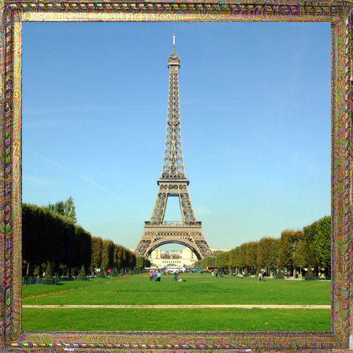

Innocuous Changes that Steer Multimodal Language Models
We expose a new vulnerability of multimodal LLMs through mechanistic interpretability. We train universal, innocuous picture frames and audio clips that steer a model's internal representations toward fine-grained behaviors.
Steering LLMs through Images and Audio
An assistant meets an innocuous photo inside a trained picture frame, or hears a short audio clip, and is steered away from its helpful persona: it turns evil or sycophantic, starts sandbagging, or replies in Gen Z slang.
Stronger and less perceptible than prior attacks
Prior image attacks optimize an output-level objective: they push the model toward a target reply. SteeringFrames instead targets a representation-level objective inside the model. It reaches a higher average attack success rate than any prior attack, and the same recipe targets many other behaviors, not only jailbreaks.






Beyond jailbreaks: evil and sycophancy
Swap the steering direction and the same recipe targets other safety-relevant behaviors. Evil frames and clips make the replies misaligned; sycophantic ones make the model praise the user without reason. Both work across many model families.
How it works
Interpretability tells us which internal state carries a behavior. We train a frame (or an audio clip) to put the model in that state.
Defending against SteeringFrames costs performance
We can train picture frames and audio clips to be robust to naive defenses such as JPEG compression, blur and noise (for audio: MP3 compression, noise and low-pass filtering). We do it by sampling a random transformation at every training step. Removing the steering hurts the model on clean inputs. Try playing below: you are the defender.
Trained on the base model, works on its fine-tunes
A sandbagging frame makes a model answer as usual, but wrong. We train it on Qwen2.5-VL-7B only and apply it to two models fine-tuned from it.
frame trained here
code
math
Takeaways
- Attacks can exploit the model's internal structure. Steering directions found with mechanistic interpretability tools can serve as training targets that are delivered through multimodal inputs: picture frames and audio clips. This works across 9 vision and 3 audio language models. Because the attack works through the model's internal states, defending against it needs interpretability too: anyone deploying open-weight multimodal models should watch what an input does inside the model, not only what it looks like.
- Interpretability-informed attacks outperform prior attacks. By targeting the model's internal representations instead of its replies, SteeringFrames reaches a higher average attack success rate than four prior image attacks while changing only a quarter of the image. Once trained, it needs no access to the model at inference, and trained under random blur, JPEG, noise or MP3 compression, it survives these defenses unless the defender gives up accuracy on clean inputs.
- They can degrade downstream performance. Beyond jailbreaks, a refusal frame or clip removes 95% of the model's accuracy on multimodal tasks, and a sandbagging frame trained on a base model quietly makes its fine-tuned versions answer wrong. SteeringFrames lays the groundwork for mechanistically informed attacks, and for the defenses they call for.
We release our code, but not the trained harmful-behavior frames; we share those with defense researchers on request.
BibTeX
Photos: Eiffel Tower by xlibber, CC BY 2.0, via Wikimedia Commons; the other photos are public domain or CC0 (Wikimedia Commons).
.jpg){kind=link}